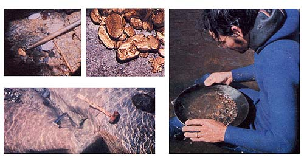

PHOTOS BY THE AUTHOR
CLOCKWISE FROM LOWER LEFT.. This ""V"" channel provided productive sniping . . . . The pointer indicates an ""as we found it"" nugget .... Most of this gold, which totaled about two ounces, was found in the one softball-sized pocket .... It was either picked up as nuggets or panned out of gathered sand and pebbles.